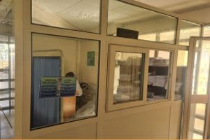
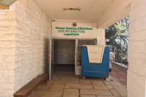
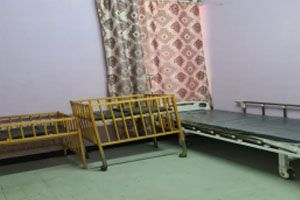
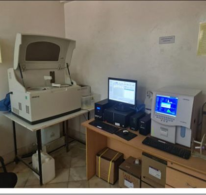
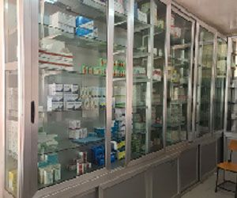
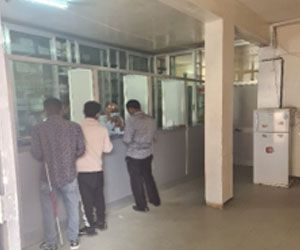
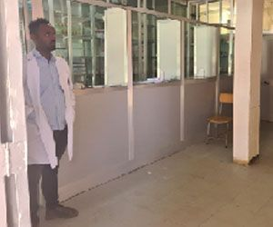
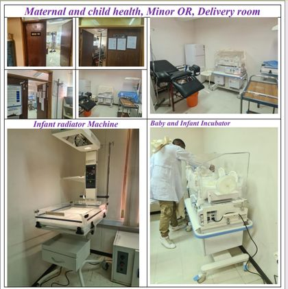
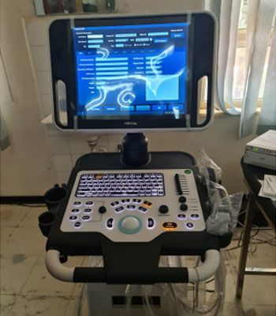

Our Departments
Explore the healthcare departments and specialized service units of Haramaya University Health Center. Our professionals work together to provide accessible, affordable, patient-centered care to students, university employees and the surrounding community.

Outpatient Department (OPD)
Medical consultations, examinations, diagnosis, treatment, preventive healthcare and follow-up for patients who do not need hospitalization. The Main Campus has three outpatient departments.
Main responsibilities
- Early diagnosis of diseases
- Curative and preventive healthcare
- Treatment without hospitalization
- Screening patients who may need admission
- Follow-up care after treatment or discharge
- Health promotion through patient education
- Keeping medical records for future treatment and medical education
- Supporting medical and nursing student training
Facilities
Outpatient consultation rooms: OPD Room 1, OPD Room 2 and OPD Room 3.
Emergency and Triage Services
Triage identifies patients who need immediate medical attention and prioritizes their treatment according to their condition.
Triage responsibilities
- Assess arriving patients
- Identify the urgency of medical conditions
- Prioritize patients for appropriate care
- Direct patients to the appropriate clinical service
Emergency services
- Provide immediate medical attention
- Respond to sudden and urgent medical conditions
- Coordinate patient care and referral when necessary
Inpatient Department (IPD)
Care for patients who need hospitalization, medical observation, treatment or overnight stays.
Main responsibilities
- Care for admitted patients
- Monitoring patients during their stay
- Treatment for serious illnesses
- Childbirth-related inpatient care
- Rehabilitation services
- Supporting surgical services where officially available
Published bed capacity



Laboratory Department
Medical tests on blood, urine, stool, tissues and other body fluids help healthcare professionals diagnose diseases and monitor treatment.
Main responsibilities
- Receiving laboratory requests
- Performing available medical tests
- Recording laboratory findings
- Providing test results for clinical decision-making
- Supporting diagnosis and treatment monitoring
Laboratory services
Complete Blood Count (CBC)
Counts blood cells to help assess health.
Hematology
Tests related to blood and its components.
Blood Chemistry
Measures chemical substances in the blood.
Urinalysis
Examines urine to support diagnosis.
Serology
Blood tests that look at the body’s immune response.
Parasitology
Tests to identify parasites.

Pharmacy Department
Pharmacy supports treatment through proper management, storage, distribution and dispensing of medicines.
Main responsibilities
- Monitoring prescriptions
- Storing medicines
- Distributing medicines
- Procuring medicines
- Counseling patients about their medicines
- Dispensing prescribed medicines
- Evaluating pharmacy services for patient improvement



Maternal and Child Health Department
Services that support the health and well-being of mothers, pregnant women, newborns and children.
Available services
- Antenatal care
- Delivery services
- Postnatal care
- Vaccination
- Management of common childhood illnesses
- Sexual and Reproductive Health services
- Family planning
Common childhood illnesses mentioned by the health center
Mental Health and Counseling Services
Psychiatric and counseling services support the mental and psychological well-being of patients, in a respectful and private setting.
- Psychiatric services
- Mental health support
- Counseling services

Diagnostic and Other Clinical Services
Additional diagnostic and clinical services published by the health center.
- Ultrasound services
- Tuberculosis (TB) screening
- Telehealth virtual appointments
- Ambulance services
X-ray and other diagnostic facilities are not listed until the health center confirms them.
How departments work together
A general patient-care journey. Patients may use different departments depending on their healthcare needs.
Referral services
When a condition needs services beyond the health center’s capacity.
Referral depends on each patient’s medical needs and the services available. Not every patient follows the same route. The published information also describes transport support arrangements; details will be confirmed with the health center.
Healthcare professionals
Professional groups who support the departments.
Staff profiles with approved names and photographs will be added after the health center approves them.
Explore the health center
Learn about our services, find a doctor or get in touch.